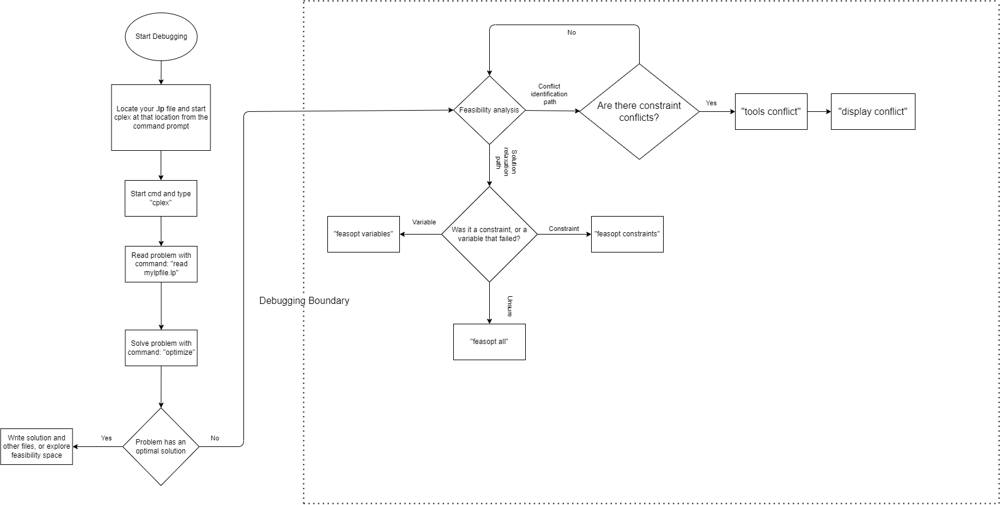

Appendix D: Overview of CPLEX Debugging
Contents
Appendix D: Overview of CPLEX Debugging#
The debugging process is at the core of of any mathematical program model. In this project, we used the CPLEX solver as the main optimizer for the model. In chapter 4, we briefly introduced the use of the CPLEX optimization suite to probe your model’s solution; now, we will explore some of the nuances of the solver to better guide your debugging process.
CPLEX is a robust linear optimizer for your machine, and as such, it has many applications and tools to help the user debug and increase the performance of their model. In this appendix we will be exploring the conflict refiner and some of the nuances of model infeasibility, but if you wish to dive deeper into CPLEX and better understand the software as a whole, then check their user manual.
The following flowchart summarizes the contents of this appendix and serves as a guide for model debugging in CPLEX.

D.1 Model Feasibility / Infeasibility#
The most common case in which one would want to use the CPLEX optimizer IDE is to debug a model and trace the origin of an infeasibility. While there are many reasons for model infeasibilities, the CPLEX solver allows the user to dissect a model from its lp file, therefore, as it was explained in chapter 4, the debugging process for any model begins with reading its .lp file, which pyomo can write upon request (read chapter 4 for further details).
After reading the .lp file, it is common practice to solve the model again inside the CPLEX IDE using the optimize command. If the model is infeasible, CPLEX will trace the cause of the infeasibility, usually, to either a row, or a column, which denotes a problem with a given constraint, or variable, respectively. Sometimes, just knowing if the problem resides with a variable, or a constraint can mean an easy fix to the constraint declaration, or a slight change to the input parameters can get rid of the infeasibility. Other times it can be quite hard to know which portion of input data is causing the problem, or how exactly to alter the solution space to accomodate the infeasibility.
To deal with more convoluted infeasibilities, it is recommended that the user calls the feasopt command from the CPLEX IDE. This command will allow the solver to perform boundary relaxations, which will give an output suggesting the least change (minimum variation) to the objective that would achieve feasibility. “FeasOpt does not actually modify your model. Instead, it suggests a set of bounds and constraint ranges and produces the solution that would result from these relaxations [1].”
The output from the command will give a relaxation amount that is to be applied to the infeasible variable, or constraint. This amount (vector) will be positive or negative depending upon the kind of constraint or variable bound which is infeasible, or it will be 0 (zero) if the model is already feasible [2].
Less-than-or-equal-to constraint / variable upper bound: positive vector (add amount to constraint / variable)
Greather-than-or-equal-to constraint / variable lower bound: negative vector (subtract amount from constraint / variable)
Equal-to constraint: in this case the feasibility vector will be dependent on what inequality causes the infeasibility:
The constraint’s RHS > LHS: vector is negative (subtract amount from constraint)
The constraint’s RHS < LHS: vector is positive (add amount to constraint)
D.2 Conflicts and the Conflict Refiner#
Sometimes, a model can become infeasible due to a wrong declaration of a constraint, or because input data is drastically skewing constraints and re-shaping the solution space, such that its boundaries are conflicting with each other. A conflict is simply a set of mutually contradicting constraints and / or variable bounds in a model [3].
Luckly, CPLEX provides its user with a conflict refiner tool which can bring light to the conflict set. To invoke the conflict refiner from within the IDE in the command line, the user must navigate to the tools menu, which can be done with the following command: tools conflict. This will output the conflict set (number of conflicting constraints and variable bounds). If you wish to have the entire conflict set printed out onto the screen, you can do so with the display command as follows: display conflict all. Or, you may have the set printed out to a separate file by writting a conflict file: write my_confliict_file clp.
The conflict refiner must first be called to analyze the model for possible conflucts before the conflict set can be displayed, that is, if you first try to write the conflict set, before calling thr conflict refiner, CPLEX will simply say your model has no conflicts when it may, in fact, contain some. In summary, the commands related to the conflict refiner are listed below.
Invoke conflict refiner:
tools conflictDisplay conflict set on screen:
display conflict allWrite conflict set to conflict file:
write my_confliict_file clp.
D.3 References#
[1] What is FeasOpt?